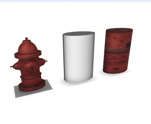
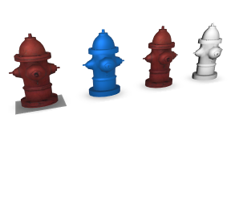

getMaterial function
Syntax
string[] getMaterial(source, mode)
Parameters
- source (selector)
Specifies which material to read.used The currently used material which is a combination of the shape material and the material of the shape's geometry. Shape material attributes explicitly set in CGA override the geometry's material. shape The material of the current shape, independent of the geometry. geometry The material of the geometry of the current shape. If the geometry has several materials the first one is taken. - mode (selector)
Specifies which attributes to consider.changed Only material attributes which are actually set i.e., attributes which are left on the default value are skipped. all All material attributes.
Returns
The selected material as a 2D string array. Each row contains two columns: the attribute name and its value.
Description
The getMaterial function returns the current material as a string array. This allows for conveniently capturing all material attributes in one function. The result can then be used to set material attributes with the setMaterial operation. Note that the "current material" is actually a combination of the current shape's material and the material of the curent shape's geometry. Printing the material array to the console is a good way to inspect these materials.
Related
- readMaterial function
- setMaterial operation
- resetMaterial operation
- color operation
- texture operation
- set operation
- material attributes
- material.color attribute
- material.map texture layers
- Texturing: Essential Knowledge
Examples
Example 1: material after setting individual attributes
CGA Code:
RefExample1--> color(0.5, 0.6, 0.7) print(getMaterial(used, changed))Result:
(3x2) color.b 0.7 color.g 0.6 color.r 0.5
Example 2: material after inserting an asset
CGA Code:
RefExample2-->
i("/ESRI.lib/assets/Webstyles/Vegetation/Realistic/AcerPlatanoides.glb")
print(getMaterial(used, changed))
Result:
(15x2)
metallic 0
opacity 1
opacitymap.cutoff 0.1000000014901161
roughness 0.800000011920929
color.b 1
color.g 1
color.r 1
emissive.b 0
emissive.g 0
emissive.r 0
name
opacitymap.mode mask
colormap /ESRI.lib/assets/Webstyles/Vegetation/Realistic/AcerPlatanoides.glb/img0
opacitymap /ESRI.lib/assets/Webstyles/Vegetation/Realistic/AcerPlatanoides.glb/img0
shader CityEnginePBRShader
Example 3: applying a geometry asset's material on a primitive geometry
|  |
RefExample3-->
i("/ESRI.lib/assets/Webstyles/StreetScene/Fire_Hydrant.glb")
X.
t('-1.5, 0, 0)
CreateCylAndSetMaterial(getMaterial(geometry, changed))
CreateCylAndSetMaterial(m)-->
primitiveCylinder(16)
X.
t('-1.5, 0, 0)
setMaterial(m)
X.
The Fire_Hydrant asset is inserted (left). This geometry has various material attributes set. Next, a cylinder is created, which uses the CGA default material (middle). Finally, the Fire_Hydrant material is applied on the cylinder (right).
|
Example 4: shape material vs. geometry material
|  |
const defaultMaterial = getMaterial(shape, all)
RefExample4-->
i("/ESRI.lib/assets/Webstyles/StreetScene/Fire_Hydrant.glb")
X.
t('-1.5, 0, 0)
color(0.0, 0.5, 1)
set(material.colormap, "")
X.
t('-1.5, 0, 0)
resetMaterial()
X.
t('-1.5, 0, 0)
setMaterial(defaultMaterial)
X.
The Fire_Hydrant asset is inserted (left). This geometry has various material attributes set. Then some shape material attributes are set to override the geometry material, resulting in a blue, untextured model. Next the changes to the shape material are reset which gives the original material setup of the asset again. Finally, the full default CGA material, which is captured in a const function, is explicitly set, resulting in all shape material attributes being set and thus override the geometry's material.
|
Copyright ©2008-2022 Esri R&D Center Zurich. All rights reserved.